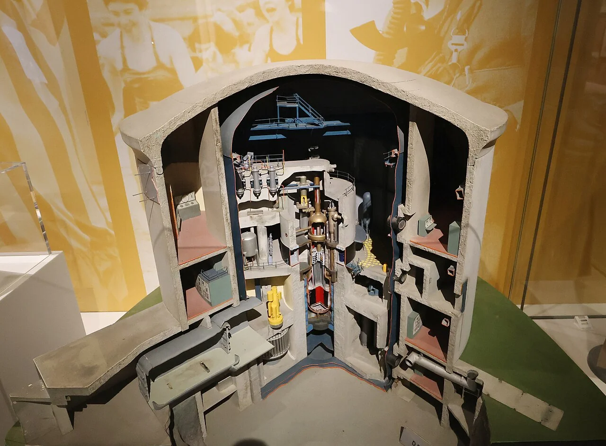
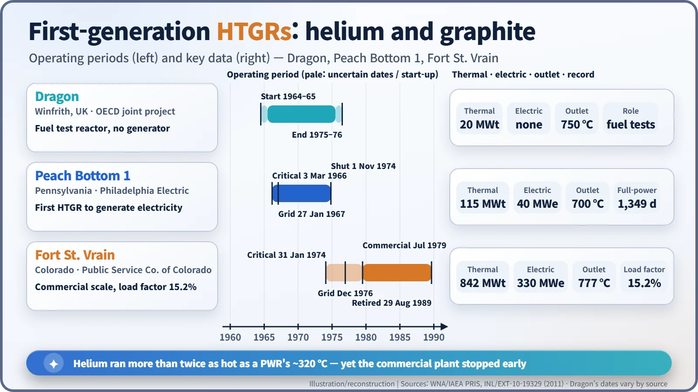
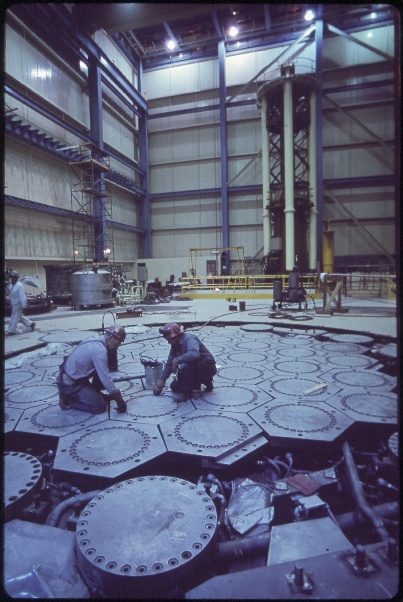
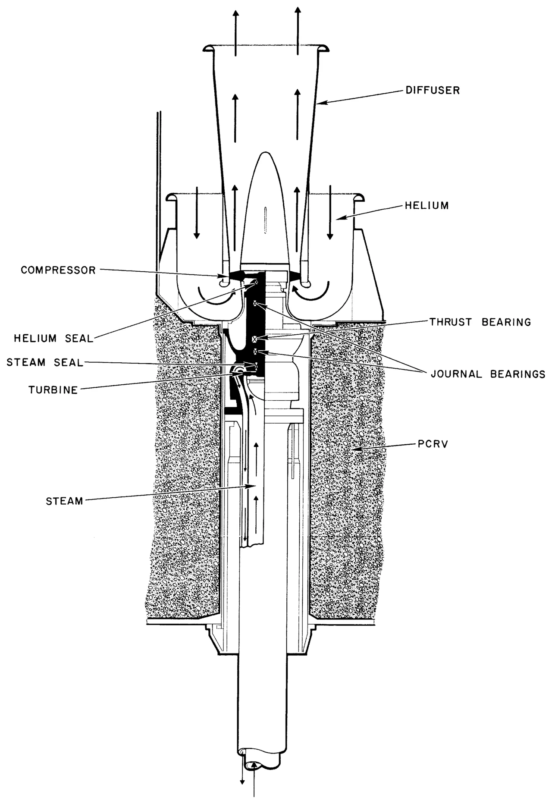
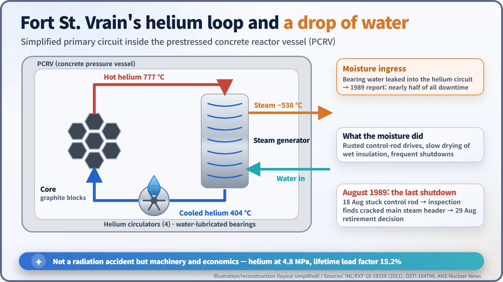

Nuclear History · 208
Cooled by Helium, Built of Graphite — America's High-Temperature Gas-Cooled Reactors, Peach Bottom 1 and Fort St. Vrain
Helium at 777 °C and TRISO fuel that held up, undone by water in the bearings and a cracked steam header.
High-temperature gas-cooled reactors (HTGRs) swap water for helium and metal for graphite, so they can run far hotter than ordinary power reactors. Britain's Dragon test reactor came first; in the United States, Peach Bottom Unit 1 (1967–1974) became the first HTGR to generate electricity and Fort St. Vrain (1974–1989) the only commercial-scale one. Fort St. Vrain was retired in 1989 not because of a radiation accident but because of water-lubricated bearings, cracked steam piping and poor economics.
The water that got in
Inside the machine that pushed coolant around a reactor in Colorado sat a set of metal bearings. Their job was ordinary: let a spinning shaft turn smoothly. What was unusual was the lubricant. These bearings ran on water, not oil, and that water kept finding its way, a little at a time, into a place it was never supposed to be. When the plant closed in 1989, nothing had held it back longer than that water.
The plant was Fort St. Vrain, the only commercial-scale high-temperature gas-cooled reactor the United States ever built. [3]
Swap the water for helium and the metal for graphite
Most nuclear plants are light-water reactors, cooled by ordinary water. In a pressurised water reactor (PWR), the water leaving the core is at about 320 °C. Keeping it from boiling takes high pressure, so pushing the temperature much higher is hard.
The high-temperature gas-cooled reactor (HTGR) changes the recipe. Its coolant is helium gas, which barely reacts with anything and can never boil. The core is built from graphite, which shrugs off heat, and the fuel is uranium and thorium in grains smaller than a poppy seed, each wrapped in ceramic coatings. That combination let designers heat the helium past 700 °C and raise hotter, more efficient steam. [3]
In the United States the idea was championed by General Atomic, then a division of General Dynamics. The US Atomic Energy Commission (AEC) backed it through its Power Reactor Demonstration Program.
A Dragon in England, 40 megawatts in Pennsylvania
The very first HTGR was British. In April 1959 representatives of twelve European countries signed an agreement to build an experimental reactor at Winfrith in Dorset as an international project of what is now the OECD Nuclear Energy Agency. It was called Dragon. It produced 20 megawatts of heat (MWt) with helium leaving the core at 750 °C, but it had no generator: its job was to test new fuels and materials. It ran from the mid-1960s to the mid-1970s; sources differ by about a year on when it started and stopped. [3]

America's first entry stood beside the Susquehanna River at Peach Bottom, Pennsylvania. Operated by Philadelphia Electric and backed by more than 50 utilities, Peach Bottom Unit 1 was started in February 1962, reached criticality on 3 March 1966 and was connected to the grid on 27 January 1967. At 115 MWt and 40 megawatts of electricity (MWe) it was small, but it was the first HTGR to generate electricity. [1] [3]
Its first core had a problem. Each fuel grain carried only a single carbon coating, the coatings failed, and radioactivity in the helium circuit kept creeping up. In 1970 the whole core was replaced with BISO fuel, which had two coating layers, and the problem was solved. Add a layer of silicon carbide to that design and you get TRISO, still the standard fuel for gas-cooled reactors. Peach Bottom 1 ran until 1 November 1974. According to a US Nuclear Regulatory Commission history, it generated the equivalent of 1,349 days at full power. Its demonstration mission was done, and a 40 MW plant could not pay its way. [1] [3]

330 megawatts in Colorado, and the moisture problem
The next step was Fort St. Vrain, at Platteville, north of Denver. Construction began in September 1968. It was rated at 842 MWt and 330 MWe. Its fuel was TRISO particles packed into hexagonal graphite blocks, and the whole reactor sat inside a prestressed concrete reactor vessel (PCRV) rather than a steel one. Helium entered the core at 404 °C, left at 777 °C, and raised steam at about 538 °C. [2] [3]

The reactor first went critical on 31 January 1974 and was connected to the grid on 11 December 1976, but commercial operation was not declared until July 1979. The most persistent trouble came from the four helium circulators. Their water-lubricated bearings let water seep into the helium circuit. The moisture soaked into insulation and took a long time to dry out, and it corroded control-rod drives. A 1989 report said moisture ingress accounted for nearly half of the plant's downtime. [2] [3] [4]


The end came in August 1989. On the 18th a control rod stuck and the reactor was shut down. During the inspection that followed, engineers found cracks in the ring-shaped main steam header that collected steam from the 12 steam-generator modules. Repair would have cost too much, and on 29 August 1989 the board of Public Service Company of Colorado decided to retire the reactor for good. Its lifetime load factor was 15.2%. [2] [5]
One point is worth stating plainly: Fort St. Vrain was not shut down by a radiation accident. It was undone by machinery problems and economics.
What the fuel left behind
Fort St. Vrain was dismantled promptly rather than mothballed, and the NRC terminated its licence in August 1997. From 1996 gas turbines were installed on the site, and the original steam turbine went back to work as part of a natural-gas combined-cycle plant. [5]
The most valuable legacy was the fuel. Fort St. Vrain's TRISO particles were irradiated at more than 1,300 °C with no sign of significant coating failure, and that record became a foundation for later modular HTGR designs. A good concept can trip over a small component, and the record of that stumble can become the next generation's blueprint. [3]